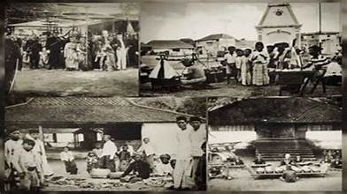
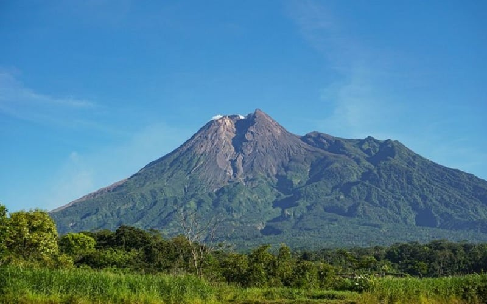
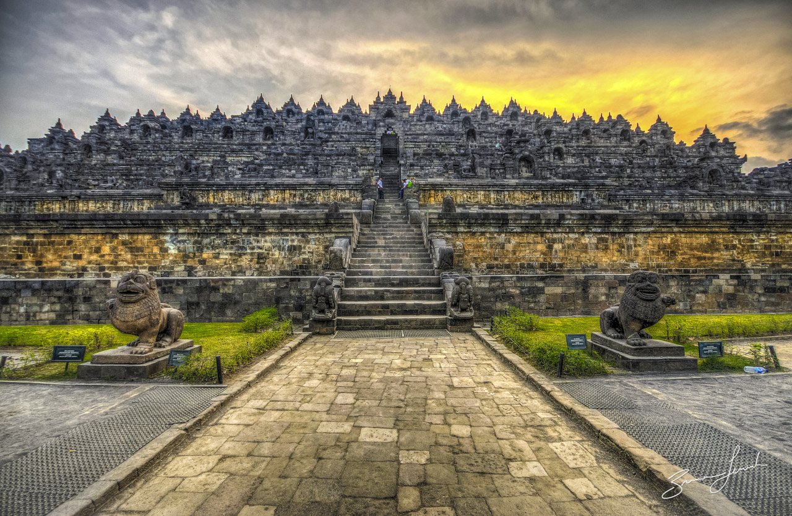

Sejarah

Daerah Istimewa Yogyakarta (DIY) memiliki sejarah yang kaya, bermula dari penggabungan dua entitas tradisional Jawa, yaitu Kesultanan Yogyakarta dan Kadipaten Pakualaman. Kesultanan Yogyakarta didirikan oleh Sultan Hamengkubuwono I pada tahun 1755 sebagai bagian dari upaya untuk mendapatkan kemerdekaan dari Kesultanan Mataram yang lebih besar. Kesultanan ini berkembang pesat dan menjadi pusat kebudayaan, pendidikan, dan politik di Jawa.
Sementara itu, Kadipaten Pakualaman berakar dari Pangeran Adipati Paku Alam I yang mendirikan kadipaten ini pada tahun 1813 sebagai tanggapan terhadap pembagian wilayah Kesultanan Yogyakarta oleh pemerintah kolonial Belanda. Pakualaman menjadi wilayah yang mandiri dengan pemerintahan dan kebijakan tersendiri.
Pada tahun 1950, dalam konteks pembentukan Negara Kesatuan Republik Indonesia, Kesultanan Yogyakarta dan Kadipaten Pakualaman bersatu menjadi Daerah Istimewa Yogyakarta. DIY diakui sebagai daerah otonom setingkat provinsi dengan hak istimewa dalam mengelola kebijakan pemerintahan dan kebudayaan, serta pemeliharaan tradisi keraton dan kebudayaan Jawa. Kesultanan Yogyakarta dan Kadipaten Pakualaman, yang sebelumnya memiliki peran politik signifikan, kemudian menjadi bagian integral dari DIY, menjadikan wilayah ini unik dalam kerangka pemerintahan Indonesia modern.
Geografis

Daerah Istimewa Yogyakarta (DIY) terletak di bagian selatan Pulau Jawa, Indonesia. Secara geografis, DIY terletak di antara 7°33'43" - 8°12'13" Lintang Selatan dan 110°6'18" - 110°27'25" Bujur Timur. Wilayah ini memiliki batas-batas sebagai berikut:
- Sebelah Utara: Provinsi Jawa Tengah
- Sebelah Selatan: Samudra Hindia
- Sebelah Barat: Provinsi Jawa Tengah
- Sebelah Timur: Provinsi Jawa Timur
DIY memiliki luas wilayah sekitar 3.185,80 kilometer persegi, menjadikannya salah satu provinsi terkecil di Indonesia. Meskipun terbatas secara geografis, DIY memiliki karakteristik alam yang bervariasi, mulai dari dataran rendah hingga perbukitan. Daerah ini juga dikelilingi oleh pegunungan, seperti Pegunungan Sewu di sebelah selatan dan Pegunungan Menoreh di sebelah barat. Sungai-sungai yang melintasi DIY, seperti Sungai Progo dan Sungai Opak, memberikan pengaruh signifikan terhadap pola hidrografi dan pertanian di wilayah ini.
Keberadaan gunung berapi yang cukup terkenal, seperti Gunung Merapi dan Gunung Merbabu, memberikan karakter unik pada topografi DIY. Wilayah ini juga memiliki kekayaan budaya dan sejarah yang luar biasa, dengan keberadaan kraton (istana kerajaan) dan berbagai situs bersejarah yang menjadi daya tarik wisata.
Wisata
Yogyakarta merupakan destinasi wisata yang kaya akan tempat menarik. Beberapa tempat wisata populer di Daerah Istimewa Yogyakarta meliputi dua destinasi yang cukup terkenal, yaitu :
Candi Borobudur

Candi Borobudur adalah situs warisan dunia yang menakjubkan, terletak sekitar 40 kilometer sebelah barat daya Yogyakarta. Candi ini dibangun pada abad ke-9 oleh Wangsa Syailendra dan merupakan candi Buddha terbesar di dunia. Dengan struktur piramida yang megah dan pahatan relief yang mengagumkan, Candi Borobudur menjadi daya tarik utama bagi wisatawan dan pencinta sejarah. Setiap tahun, terutama saat perayaan Waisak, ribuan orang berkumpul di sini untuk merayakan momen penting dalam agama Buddha.
Taman Sari

Taman Sari, di sisi lain, adalah bekas istana air yang unik dan indah yang terletak di pusat Kota Yogyakarta. Dibangun pada abad ke-18 oleh Sultan Hamengkubuwono I, Taman Sari memiliki arsitektur yang memesona dan merupakan perpaduan antara keindahan alam dan seni arsitektur Jawa.
Tempat ini dulunya digunakan sebagai kompleks rekreasi dan istirahat bagi keluarga kerajaan. Kini, wisatawan dapat menjelajahi kompleks ini yang terdiri dari kolam-kolam air, ruang bawah tanah, dan bangunan-bangunan bersejarah, menciptakan pengalaman yang memukau tentang kehidupan istana pada masa lalu.